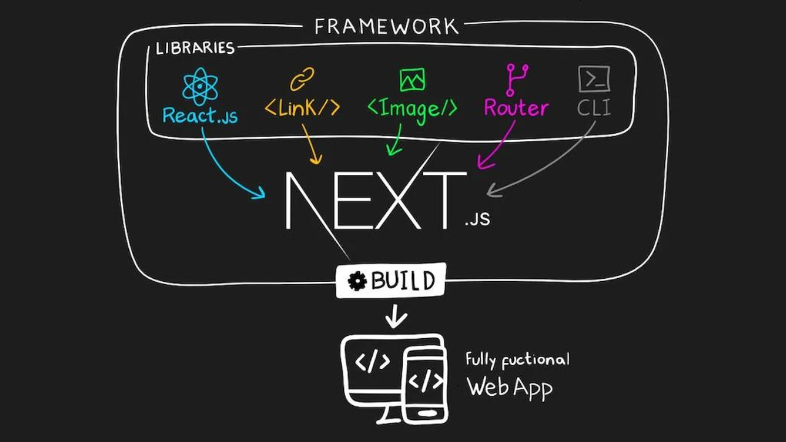
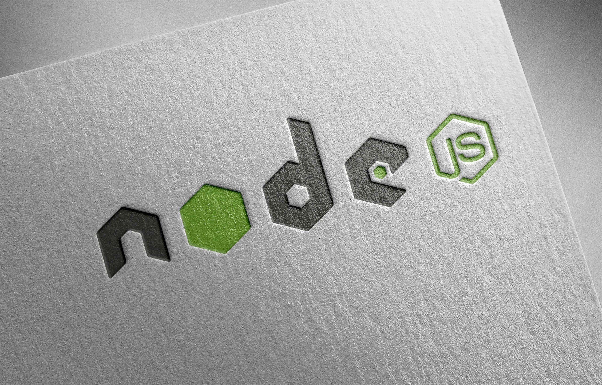

# NextJS là gì? Kiến thức NextJS cơ bản bạn cần biết

NextJS là framework mã nguồn mở được xây dựng trên nền tảng của React, cho phép chúng ta xây dựng các trang web tĩnh có tốc độ siêu nhanh và thân thiện.
NextJS không chỉ đơn giản là một framework React, nó là một môi trường phát triển mạnh mẽ, mang lại hiệu suất tuyệt vời và cho trải nghiệm người dùng vượt trội. Bằng cách tận dụng các tính năng quan tích hợp sẵn, NextJS cho phép chúng ta xây dựng các
ứng dụng React một cách nhanh chóng và hiệu quả.mTrong bài viết này, các bạn hãy cùng mình tìm hiểu sâu về NextJS nhé.
Đọc tiếp
Đọc thêm về các bài viết khác:
# Node.js là gì? Tổng hợp kiến thức NodeJS từ A-Z

Node.js được xây dựng dựa trên JavaScript runtime. Nghe thật tuyệt, nhưng bạn đã thật sự hiểu chi tiết Node.js là gì? Nó hoạt động như thế nào? Cùng TopDev tìm hiểu từ A-Z về NodeJS trong bài viết dưới đây!
NodeJS là một nền tảng được xây dựng trên “V8 Javascript engine” được viết bằng c++ và Javascript. Nền tảng này được phát triển bởi Ryan Lienhart Dahl vào năm 2009...
Đọc tiếp
Đọc thêm về các bài viết khác: